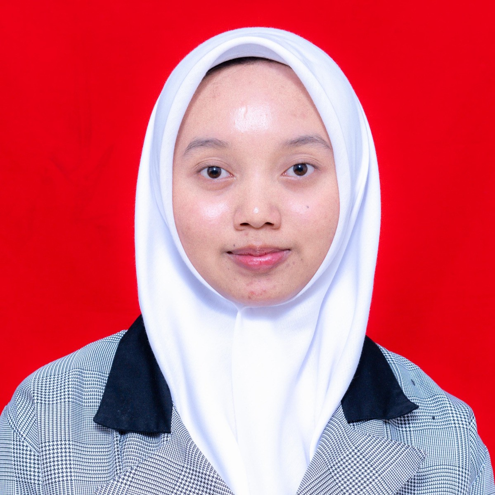
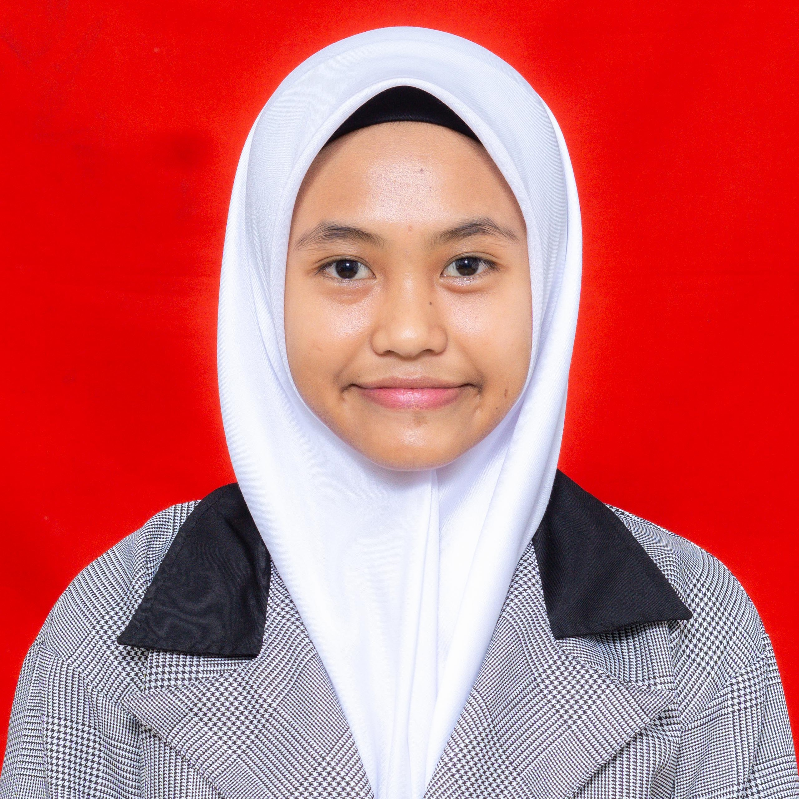
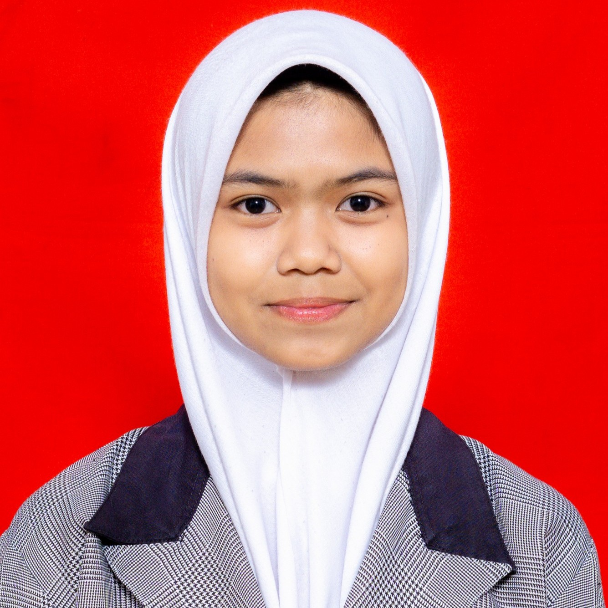

1. Meningkatkan Kepedulian
Membuka wawasan warga sekolah tentang pentingnya efisiensi daya listrik serta dampak nyata dari pemborosan energi terhadap iklim bumi.
ENERGIZE dibuat sebagai media kampanye untuk mengajak warga sekolah lebih peduli terhadap penggunaan energi. Website ini tidak hanya menyampaikan informasi, tetapi juga mengajak pengunjung memahami pentingnya kebiasaan hemat energi melalui fakta, rekomendasi, dan aksi sederhana.
Tiga pilar utama yang menjadi pondasi gerakan ENERGIZE dalam menciptakan ekosistem sekolah yang sadar energi.
Membuka wawasan warga sekolah tentang pentingnya efisiensi daya listrik serta dampak nyata dari pemborosan energi terhadap iklim bumi.
Mengubah kebiasaan kecil sehari-hari menjadi rutinitas positif yang konsisten, mulai dari mematikan sakelar lampu hingga mencabut charger.
Mewujudkan budaya sekolah hijau yang ramah lingkungan dan menjadi percontohan penerapan prinsip Education for Sustainable Development (ESD).
Gerakan ENERGIZE ditujukan untuk seluruh elemen warga sekolah demi menciptakan kolaborasi yang menyeluruh dan berdampak nyata.
Sebagai agen perubahan utama di ruang kelas, laboratorium, dan lingkungan pertemanan untuk membiasakan gaya hidup hemat listrik.
Sebagai teladan dan pendidik yang mengintegrasikan nilai-nilai konservasi energi ke dalam proses pembelajaran dan tata tertib kelas.
Mendukung tata kelola fasilitas gedung, operasional listrik, dan pemeliharaan sarana prasarana sekolah yang efisien energi.
Tahapan bertahap pengembangan kampanye ESD dari penyadaran hingga tindakan nyata di lingkungan sekolah.
Mengenalkan identitas kampanye, latar belakang, dan urgensi hemat energi melalui website kampanye yang mudah diakses.
Menyajikan data hasil survei, pengamatan lapangan, dan infografis pola konsumsi energi di lingkungan sekolah.
Rekomendasi tindakan terarah, panduan kelas hemat energi, dan komitmen partisipasi aktif seluruh warga sekolah.
Siswa penggerak inisiatif kampanye konservasi energi untuk proyek Education for Sustainable Development (ESD).



Kembali ke beranda untuk mempelajari kebiasaan hemat energi yang bisa diterapkan sekarang.
Kembali ke Beranda